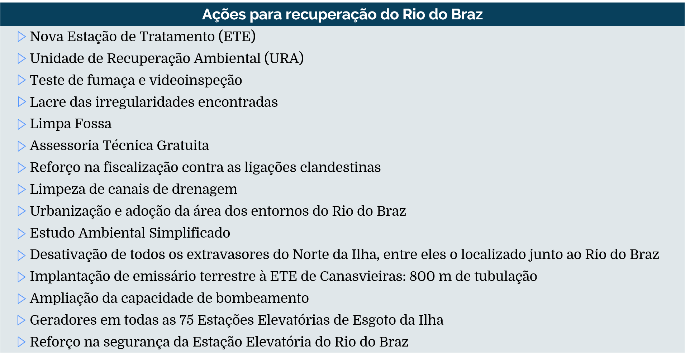

Decisão judicial definiu a balneabilidade de Canasvieiras
O aposentado Salvador Mendes, de 64 anos, sorri e aponta para o Rio do Braz, que passa ao lado de sua casa. “Faz mais de um ano que ele não fede mais. Até isso acontecer, foi muita luta da sociedade”, diz. A menos de cem metros da residência funciona a filtragem da Unidade de Recuperação Ambiental (URA) Rio do Braz, instalada em 2016, uma das principais causas para a atual despoluição do corpo d’água da região norte de Florianópolis.
O balneário de Canasvieiras, maior destino turístico dos estrangeiros que visitam a capital catarinense, foi protagonista da crise do saneamento vivida no município em 2016. Naquele verão, para evitar o cheiro que exalava do Rio do Braz, que desemboca na praia, alguns veranistas chegaram a utilizar máscaras ao caminhar na areia. No Clarín, jornal argentino de circulação nacional, o caso da poluição e falta de balneabilidade da praia de Canasvieiras se tornou manchete.
“Os turistas argentinos, que tinham reservado vaga na pousada, ligavam para perguntar se podiam tomar banho de chuveiro, se era perigoso entrar em contato com a água da pia”, conta Francisco Santana Júnior, proprietário de uma pousada na região. No mesmo ano, um surto de diarreia foi registrado pela Vigilância Epidemiológica de Florianópolis. Somente em janeiro de 2016, 2860 casos de pessoas com diarreias agudas foram registrados na Unidade de Pronto Atendimento (UPA), que recebe pacientes do Norte da Ilha.
A construção da Unidade de Recuperação Ambiental, acompanhada pela modernização e ampliação da Estação de Tratamento de Esgoto (ETE) Canasvieiras, foi demandada após uma decisão judicial da 6ª Vara Federal de Florianópolis, em maio de 2016, que apontou a Casan como responsável pela poluição do Rio do Braz. A Justiça Federal e o Instituto Chico Mendes de Conservação da Biodiversidade (ICMbio) obrigaram a organização a tomar alguma ação para tornar o sistema de coleta e tratamento de esgoto, que existia desde 1996 na região, eficaz e abrangente.
De acordo com a Casan, após a decisão judicial, a organização “adotou o Rio do Braz e realizou uma série de ações para ajudar a despoluir uma região contaminada há quatro décadas”. Ela afirma que foram gastos “mais de R$ 15 milhões na área, sendo que a maioria das ações não eram de responsabilidade da empresa”. Estas ações, no entanto, foram decorrentes de uma ação judicial.
Instalada em 2016, a Unidade de Recuperação Ambiental (URA) é um sistema que coleta do rio e filtra 700 mil litros por dia de água poluída, liberando-a novamente depois de recuperada. Acoplada à estrutura antiga, a nova ETE fez com que o tratamento de água passasse de 85 para 185 litros por segundo em Canasvieiras.
Para Emerson Barcelos, proprietário de um café no centro de Canasvieiras, a intervenção da Justiça Federal foi importante para a manutenção do turismo e da saúde da população. “Naquele ano, a única coisa que eu vendi bem foi Gatorade. As pousadas estavam lotadas, mas as pessoas procuravam praias mais limpas durante o dia. Iam para a Praia do Santinho, por exemplo. Não consumiam aqui. São de extrema importância as medidas tomadas”, opina o comerciante.
Após as intervenções da Casan, que terminaram em dezembro de 2016, o Rio do Braz teve a redução de cerca de 90% dos coliformes fecais existentes na água. De acordo com Lucas Arruda, Superintendente de Habitação e Saneamento da Prefeitura de Florianópolis, mais de 15 ações, como testes de fumaça e regularização de imóveis não conectados à rede de esgoto, além da ampliação da ETE, foram feitos em Canasvieiras. “O que se decidiu foi arrumar o problema, não achar um culpado”, diz.
Para alguns especialistas, no entanto, a medida tomada pela Casan não foi definitiva, mas paliativa. A coordenadora do curso de Oceanografia da Universidade Federal de Santa Catarina (UFSC), Juliana Leonel, explica que a ação está com “data agendada para expirar”, pois com o aumento da população no bairro, a URA não será suficiente para tratar o esgoto no Rio do Braz. “Talvez até neste verão a gente veja o quanto a situação dessa praia ainda é instável”, relata a pesquisadora, que acompanhou o histórico de ações da Casan no balneário.
A preocupação continua sendo a irregularidade de imóveis não ligados corretamente ao tratamento de esgoto, mas também a sujeira das ruas, que acaba indo diretamente ao Rio do Braz. “A atuação foi no fim do tubo. Ao invés de garantir que todo o esgoto vá direto para a Estação de Tratamento, constróem no rio uma URA. Em pouco tempo, isso resolveu os problemas imediatos. Mas não é viável ficar limpando rio depois de sujo”, diz o engenheiro ambiental Vinicius Ragghianti, coordenador do Plano Estadual de Recursos Hídricos de Santa Catarina.
Para Ragghianti, que hoje é um dos principais engenheiros ambientais que pesquisam o tema em Florianópolis, uma ação importante para solucionar a poluição do Rio do Braz e, consequentemente, da praia de Canasvieiras, não é somente tratar todo o esgoto gerado, mas, também, a drenagem urbana. “A única forma de garantir limpeza nesses balneários é tratar água da chuva. Em qualquer balneário de um país desenvolvido, com boa qualidade de vida, não se separam as duas situações [água do esgoto e água da chuva]. Afinal, a chuva “varre” a rua e leva tudo que tem nela para o rio”, argumenta.
Quando questionada sobre a possibilidade de unir o tratamento dos efluentes domésticos com a drenagem urbana, a CASAN contestou que “tudo é possível”, mas que os gastos são altos para o município.
A turista chilena Diana Cabezas, de 27 anos, passou a primeira semana de novembro de férias em Canasvieiras. Aproveitando a praia própria para banho, ela ficou impressionada ao saber que aquele mesmo balneário tem histórico de contaminação. “Essa foi minha praia favorita em Florianópolis. Encanta-me que a água não seja fria nem muito agitada, além de ter várias opções de restaurantes e bares por aqui. Quando entrei na água, achei bem limpa”, avalia.